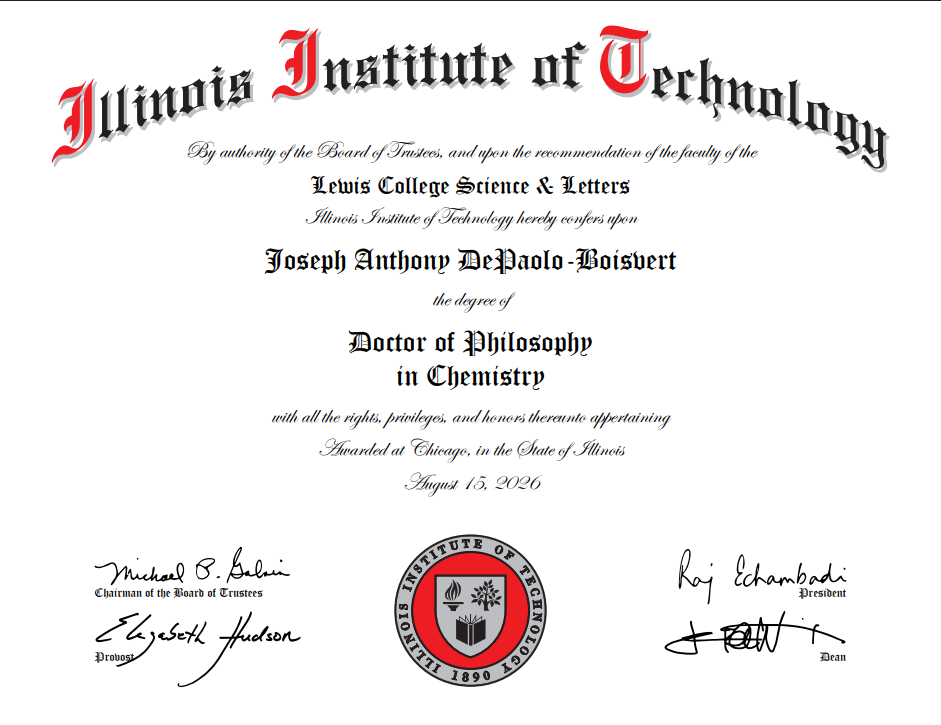

> issued whenever something is worth reporting · est. 2026 · free
Section F · Dispatches
Bulletin — From the Lake
last filed · 2026 · X · 29, 22:10 local

NEW
Fig. 1 — The document in question. Awarded at Chicago, August 15, 2026. Signatures authentic; frame pending.
Notices
degrees conferred · 2026 · VIII · 15
The Board of Trustees of the Illinois Institute of Technology, upon the recommendation of the faculty of the Lewis College of Science and Letters, has conferred upon Joseph Anthony DePaolo-Boisvert the degree of Doctor of Philosophy in Chemistry, with all the rights, privileges, and honors thereunto appertaining. Six years, three chapters, one software suite, and a nonzero number of boat shifts. The Dispatch, which has been calling him Doctor since the inaugural issue, declines to apologize for the lead time.
Reading
russian short stories
Working slowly through a tattered Penguin anthology — Chekhov in the mornings, Babel after midnight. The point is not to finish; the point is to keep one hand on a second language.
Working on
whatever comes after a doctorate
The defense cleared in April; the degree was conferred in August. The thesis is bound, the committee's marginalia are resolved, and the title is official. What comes next is being negotiated between the company, the manuscript, and the lake — the first serious stretch in six years without a chapter due.
Coding
autoencoder, under review
The first version of the protein autoencoder worked but was ugly; the second tries to be honest about its priors. JAX, Flax, a lot of pen-and-paper before any GPU is permitted to start. The manuscript is in its second round of peer review, and the ChiMPSS software paper went in this autumn. Two sets of referee marginalia to answer; the GPU can wait.
Off the lake
end of season
The season is winding down and the lake has gone back to being cold on purpose. The Coast Guard has issued the 100-ton Master of Motor Vessels license, Great Lakes and Inland, with the OUPV Near Coastal alongside it — so the Instagram handle and the front-page headline are, at last, both accurate. First mate on the paperwork, captain on the license. Neither worth arguing about.
← previous bulletins archived by date · scroll for older issues →